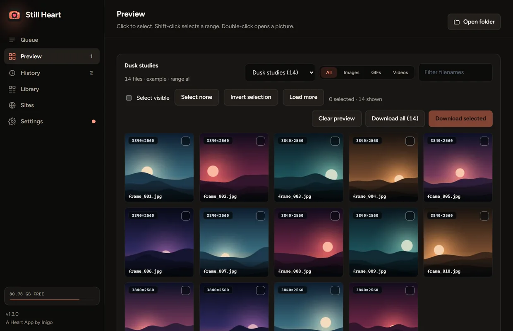
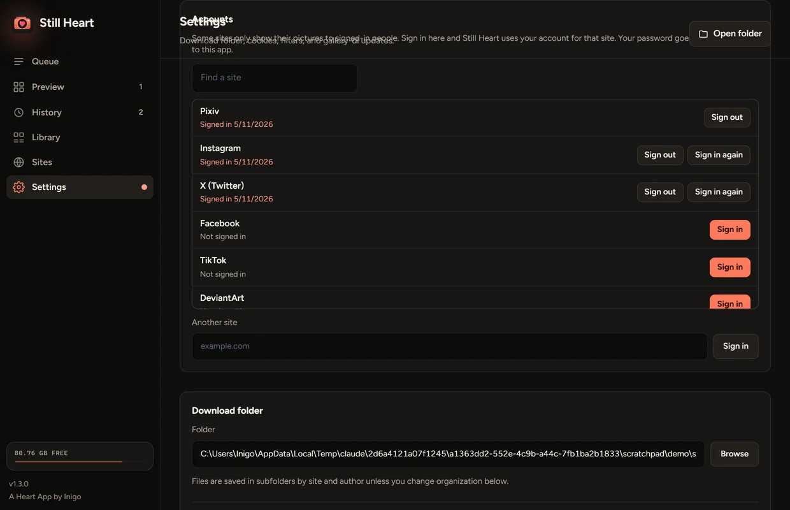
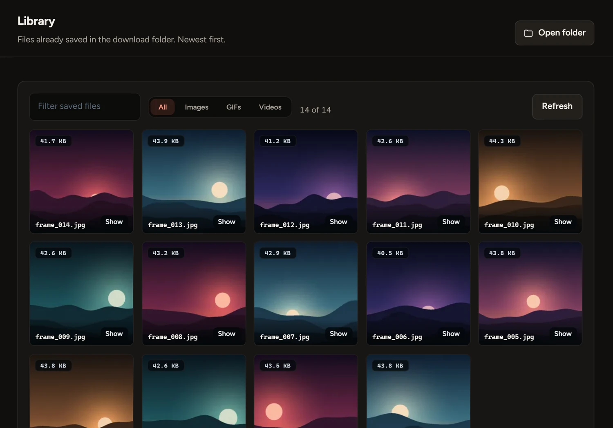

Scan, then choose
A scan shows every file as a thumbnail with its size. Click to pick, shift-click for a range, then download only those.
- Albums, profiles and posts
- Filter by type and minimum width
- Or skip the scan and save the lot

Paste a gallery link. Still Heart lists every picture so you can choose, or saves the whole set in one go.
Download for Windowsor see every release
Everything between pasting a link and a tidy folder, and nothing you don’t need.
A scan shows every file as a thumbnail with its size. Click to pick, shift-click for a range, then download only those.

Some sites only show their pictures to signed-in people. Sign in from Settings and Still Heart uses your account for that site.

A small local record remembers what you have, so running the same album again only fetches what’s new.

Sign in once under Settings, Accounts. The site’s own page opens in a window, so your password goes to the site and not to this app.
About forty sites are listed, and Another site takes any address.
Free for Windows 10 and 11. One portable file, with nothing to install. Paste a link and see what’s in the album.
Windows may warn youThe app isn’t code-signed, so SmartScreen can show “Windows protected your PC”. Choose More info, then Run anyway. Only do that for a file from this page.
The first open is slowerIt unpacks itself, which can take up to half a minute. It keeps its files in a folder beside the exe.
Your pictures stay on your computer, and your sign-ins stay there too. There are no ads and nothing to buy, and there won’t be. If a site stops working or something’s broken, write to me. I read everything.
Yes, completely: no ads, no subscriptions and no paid extras.
The sites gallery-dl supports. The Sites tab in the app lists them, with an example link for each.
Pixiv doesn’t accept ordinary cookies from download tools, only a token from its own sign-in. Open Settings, Accounts, and choose Sign in next to Pixiv. Still Heart gets the token for you, and you never have to see it.
You type it into the site’s own page, in a window, and Still Heart never sees it. It keeps only the session the site gives back, on your computer. Sign out deletes it.
Some sites refuse sign-ins from app windows. Sign in with your own browser instead and pick it under Other ways to sign in, or use a cookies.txt file.
No. It only sees what your own account can see. It doesn’t bypass paywalls, DRM or site bans. You need the right to save what you download, and a site’s own rules still apply.
Into a downloads folder beside the app, or any folder you choose in Settings.
No. It’s a single file. gallery-dl is inside, and Still Heart can update it for you.